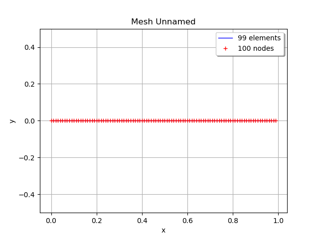
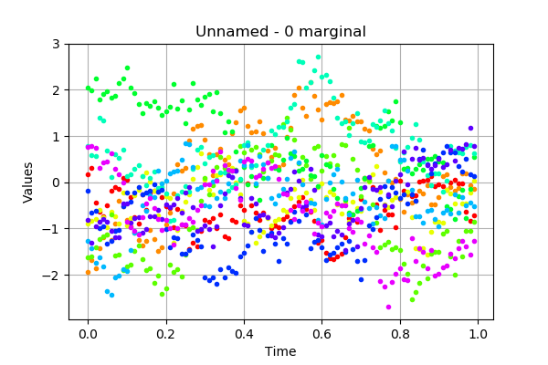
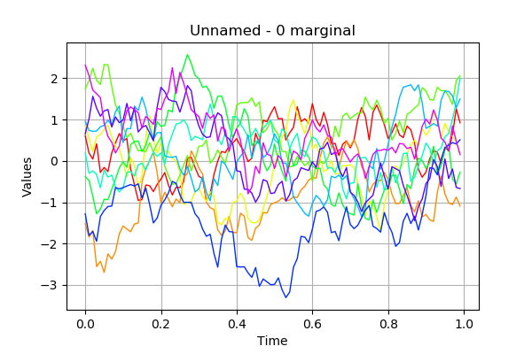
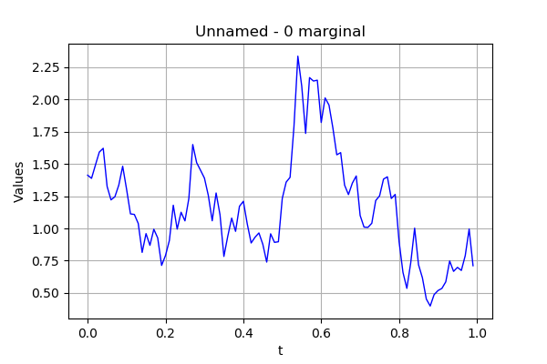

Process sample manipulation¶
The objective here is to create and manipulate a process sample. A
process sample is a collection of fields which share the same mesh
 .
.
A process sample can be obtained as  realizations of a
multivariate stochastic process
realizations of a
multivariate stochastic process
 of
dimension
of
dimension  where
where  , when the
realizations are discretized on the same mesh
, when the
realizations are discretized on the same mesh  of
of
 . The values
of the field
. The values
of the field
 are defined by:
are defined by:
In [1]:
from __future__ import print_function
import openturns as ot
import math as m
In [2]:
# First, define a regular 2-d mesh
discretization = [10, 5]
mesher = ot.IntervalMesher(discretization)
lowerBound = [0.0, 0.0]
upperBound = [2.0, 1.0]
interval = ot.Interval(lowerBound, upperBound)
mesh = mesher.build(interval)
mesh = ot.RegularGrid(0.0, 0.01, 100)
mesh.draw()
Out[2]:

In [3]:
# Allocate a process sample from a field
field = ot.Field()
sampleSize = 10
processSample = ot.ProcessSample(sampleSize, field)
#field.draw()
In [15]:
# Create a process sample as realizations of a process
amplitude = [1.0]
scale = [0.2]*1
myCovModel = ot.ExponentialModel(scale, amplitude)
myProcess = ot.GaussianProcess(myCovModel, mesh)
processSample = myProcess.getSample(10)
processSample
Out[15]:
| t | y0 | y0 | ... | y0 | y0 | y0 | |||||
|---|---|---|---|---|---|---|---|---|---|---|---|
| 0 | 0.0 | 0.18204541662690635 | -1.9381887884569047 | ... | -0.17827621751302086 | -0.8225806445605942 | 0.7555020790891768 | ||||
| 1 | 0.01 | 0.31693036986975576 | -1.6727632838457833 | ... | -0.6557971110034336 | -1.3143923162468978 | 0.7809459682373394 | ||||
| 2 | 0.02 | -0.44012297353381524 | -1.8623743139269542 | ... | -0.6239095486778223 | -0.959565076673792 | 0.740321342937527 | ||||
| ... | |||||||||||
| 97 | 0.97 | -0.6348332648437064 | 0.19979696937503139 | ... | 0.5099518482393706 | 0.8228505966698729 | -1.3885352250532688 | ||||
| 98 | 0.98 | -0.830884927448569 | -0.07076214982000062 | ... | 0.17679717950155305 | 1.1805712215667847 | -1.559283525482597 | ||||
| 99 | 0.99 | -0.7149431051217253 | -0.15180096995420744 | ... | 0.13847251025362597 | 0.7868992309515256 | -1.26374605653812 | ||||
In [16]:
# draw the sample, without interpolation
processSample.drawMarginal(0, False)
Out[16]:

In [6]:
# draw the sample, with interpolation
processSample.drawMarginal(0)
Out[6]:

In [25]:
# Compute the mean of the process sample
# The result is a field
processSample.computeMean().drawMarginal()
Out[25]:
| t | y0 | |
|---|---|---|
| 0 | 0.0 | -0.2943685746826114 |
| 1 | 0.01 | -0.3836675736212855 |
| 2 | 0.02 | -0.4280622850739695 |
| 3 | 0.03 | -0.38786041728633364 |
| 4 | 0.04 | -0.37331752910520494 |
| 5 | 0.05 | -0.5147909233972611 |
| 6 | 0.06 | -0.4990751669835663 |
| 7 | 0.07 | -0.4844038072635097 |
| 8 | 0.08 | -0.44069316329972524 |
| 9 | 0.09 | -0.24562945712217443 |
| 10 | 0.1 | -0.4360868114431804 |
| 11 | 0.11 | -0.5328131982827301 |
| 12 | 0.12 | -0.4530084660381663 |
| 13 | 0.13 | -0.469488376730809 |
| 14 | 0.14 | -0.4099617571583579 |
| 15 | 0.15 | -0.41990258383255175 |
| 16 | 0.16 | -0.291982250584867 |
| 17 | 0.17 | -0.3472438491341311 |
| 18 | 0.18 | -0.4307719777025618 |
| 19 | 0.19 | -0.4828868416664276 |
| 20 | 0.2 | -0.5009938406556245 |
| 21 | 0.21 | -0.5287747437704691 |
| 22 | 0.22 | -0.5957688046485139 |
| 23 | 0.23 | -0.40890131390074846 |
| 24 | 0.24 | -0.43919452174339774 |
| 25 | 0.25 | -0.32379377991846203 |
| 26 | 0.26 | -0.19765842954339363 |
| 27 | 0.27 | -0.08005206806781928 |
| 28 | 0.28 | -0.1390422692790659 |
| 29 | 0.29 | -0.011020136448015317 |
| 30 | 0.3 | -0.09936335164839094 |
| 31 | 0.31 | -0.1935607279056349 |
| 32 | 0.32 | -0.20013265916565423 |
| 33 | 0.33 | -0.13621884003313167 |
| 34 | 0.34 | 0.05506396229023293 |
| 35 | 0.35000000000000003 | -0.09539426910322614 |
| 36 | 0.36 | -0.03046087360049773 |
| 37 | 0.37 | 0.0358260135077053 |
| 38 | 0.38 | -0.02468276317222061 |
| 39 | 0.39 | -0.013365079629840827 |
| 40 | 0.4 | 0.03290530988704926 |
| 41 | 0.41000000000000003 | 0.09236541265760771 |
| 42 | 0.42 | 0.008829469357724084 |
| 43 | 0.43 | -0.09340391384573817 |
| 44 | 0.44 | -0.13022772024938606 |
| 45 | 0.45 | -0.11444680788475761 |
| 46 | 0.46 | -0.09004564385484443 |
| 47 | 0.47000000000000003 | -0.12388845592594633 |
| 48 | 0.48 | -0.16908921527982224 |
| 49 | 0.49 | -0.23621628297977046 |
| 50 | 0.5 | -0.06065877670252251 |
| 51 | 0.51 | 0.15528900551076183 |
| 52 | 0.52 | 0.2328522538070708 |
| 53 | 0.53 | 0.38654325208534185 |
| 54 | 0.54 | 0.3719318987324228 |
| 55 | 0.55 | 0.30069502196152453 |
| 56 | 0.56 | 0.14691883310326911 |
| 57 | 0.5700000000000001 | 0.1356408550242861 |
| 58 | 0.58 | 0.07342708661426188 |
| 59 | 0.59 | -0.04955297156102289 |
| 60 | 0.6 | -0.12172614517980676 |
| 61 | 0.61 | -0.05160754498887156 |
| 62 | 0.62 | -0.0326774321303532 |
| 63 | 0.63 | -0.10668989467443205 |
| 64 | 0.64 | -0.15389564561876834 |
| 65 | 0.65 | -0.1683840141746808 |
| 66 | 0.66 | -0.2358727277844425 |
| 67 | 0.67 | -0.2620766456348528 |
| 68 | 0.68 | -0.21696536899768884 |
| 69 | 0.6900000000000001 | -0.2766349569202509 |
| 70 | 0.7000000000000001 | -0.3277948769345407 |
| 71 | 0.71 | -0.11736641238444333 |
| 72 | 0.72 | 0.03680554556822604 |
| 73 | 0.73 | -0.1050711014114763 |
| 74 | 0.74 | -0.09345092092056338 |
| 75 | 0.75 | -0.2765450332422619 |
| 76 | 0.76 | -0.3061677367336552 |
| 77 | 0.77 | -0.2916400674250887 |
| 78 | 0.78 | -0.20597732277551606 |
| 79 | 0.79 | -0.15078081190766138 |
| 80 | 0.8 | -0.10821960357679204 |
| 81 | 0.81 | -0.2546565466130999 |
| 82 | 0.8200000000000001 | -0.3989215477491268 |
| 83 | 0.8300000000000001 | -0.40253088009985927 |
| 84 | 0.84 | -0.5033336522498485 |
| 85 | 0.85 | -0.3624046970598575 |
| 86 | 0.86 | -0.38363163356005403 |
| 87 | 0.87 | -0.4717094074313799 |
| 88 | 0.88 | -0.40878538884724347 |
| 89 | 0.89 | -0.41833995736628043 |
| 90 | 0.9 | -0.3960998494956141 |
| 91 | 0.91 | -0.32091340592646284 |
| 92 | 0.92 | -0.29185318206573546 |
| 93 | 0.93 | -0.2622038632209989 |
| 94 | 0.9400000000000001 | -0.347362634575315 |
| 95 | 0.9500000000000001 | -0.27233704267043973 |
| 96 | 0.96 | -0.205486021227324 |
| 97 | 0.97 | -0.25127382136745563 |
| 98 | 0.98 | -0.2135784229919815 |
| 99 | 0.99 | -0.13558674450100697 |
In [28]:
# Draw the quantile field
processSample.computeQuantilePerComponent(0.9).drawMarginal(0)
Out[28]:

In [9]:
# Draw the field with interpolation
processSample.drawMarginal(0)
Out[9]:

In [14]:
processSample
Out[14]:
| t | y0 | y0 | ... | y0 | y0 | y0 | |||||
|---|---|---|---|---|---|---|---|---|---|---|---|
| 0 | 0.0 | 0.6082016512190991 | -1.516964818462452 | ... | -1.2821033321246131 | 0.6568188192757204 | 2.317326540891351 | ||||
| 1 | 0.01 | 0.18794474534061273 | -1.8438198135158375 | ... | -1.8030765583212214 | 1.0172101063830876 | 2.059358992840717 | ||||
| 2 | 0.02 | 0.043580495738500424 | -1.6828293725405234 | ... | -1.7080610865121886 | 1.5627428556309622 | 1.7116099850802056 | ||||
| ... | |||||||||||
| 97 | 0.97 | 0.6379059880860732 | -1.0567978231908535 | ... | 0.44255181856888176 | -0.1960842696600071 | 0.844559444932037 | ||||
| 98 | 0.98 | 1.2606816514276786 | -0.875918616720255 | ... | 0.40963620442024967 | -0.6427201575800423 | 0.47588466080317865 | ||||
| 99 | 0.99 | 0.9210737505271945 | -1.0911123174517658 | ... | 0.5118762676358366 | -0.6688705497737476 | 0.15237663260626474 | ||||